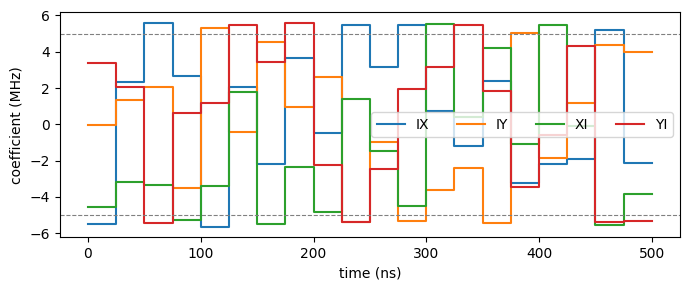

Physical units: a CNOT in nanoseconds and megahertz¤
This notebook shows GEOPE working in physical units. Pass delta_t as a time quantity and every other physical input must carry its unit too; the optimiser then runs on the usual dimensionless problem, and the results read back as quantities: a gate time in ns, a pulse in MHz or µeV.
The system is a two-qubit transverse-field Ising model: local \(X\) and \(Y\) controls on each qubit and a fixed \(ZZ\) coupling of 5 MHz. We target a CNOT with 20 segments of 25 ns, a 500 ns gate.
Convention. A coefficient \(c\) multiplies its generator as the basis defines it: \(H = \hbar\sum_k c_k G_k\) with unnormalised Paulis. Since \(\mathrm{Tr}(X^2) = 2\), a coefficient of 5 MHz on \(X\) rotates at a Rabi frequency of 10 MHz, and a \(\pi\) pulse takes \(1/(4 \cdot 5\ \text{MHz}) = 50\) ns (checked at the end). Hz-family units are cyclic and carry the \(2\pi\); rad_per_ns is angular; energies convert through \(\hbar\).
import numpy as np
import matplotlib.pyplot as plt
from geope import Gecko, Geope, History, Parameters, construct_full_pauli_basis
from geope.units import MHz, ns, rad_per_ns, ueV
1. Quantities¤
A quantity is a number or array times a unit. It converts with .to(...) and does nothing else: no arithmetic, and it can never reach jitted code.
drift = 5 * MHz
print(drift, "=", drift.to(rad_per_ns), "=", drift.to(ueV))
print((1.0 * ueV).to(MHz), " (E / h)")
print(np.array([-20, 20]) * MHz)
5.0 MHz = 0.03141592653589793 rad/ns = 0.020678338484619294 ueV
241.79892420849183 MHz (E / h)
[-20. 20.] MHz
2. The problem, in physical units¤
delta_t=25 * ns turns units on. The drift must then be a quantity too: there is no all-ones default once units are on. Internally the segment duration is exactly 1 and the drift is the rotation angle per segment, \(2\pi \cdot 5\,\text{MHz} \cdot 25\,\text{ns} = \pi/4\).
CNOT = np.array([[1, 0, 0, 0], [0, 1, 0, 0], [0, 0, 0, 1], [0, 0, 1, 0]], dtype=complex)
params = Parameters(
basis=construct_full_pauli_basis(2),
control={1: ["x", "y"], 2: ["x", "y"]},
drift={(1, 2): ["zz"]},
drift_values={(1, 2): {"zz": 5 * MHz}},
target=CNOT,
piecewise_steps=20,
delta_t=25 * ns,
seed=1,
)
print("segment: ", params.physical.delta_t)
print("gate time: ", params.physical.total_time)
print("drift: ", params.physical.drift_parameters.to(MHz))
print("internal dt: ", params.delta_t)
print("internal drift: ", params.drift_parameters, "=", params.drift_parameters[0] / np.pi, "pi")
segment: 25.0 ns
gate time: 500.0 ns
drift: [5.] MHz
internal dt: 1.0
internal drift: [0.78539816] = 0.25 pi
3. Optimise¤
Nothing about the optimiser changes: it sees the dimensionless problem it always has.
opt = Geope(params, history=History())
opt.optimize(max_steps=200, precision=1 - 1e-6)
print(f"fidelity {float(params.fidelity):.8f} after {opt.history.steps[-1]} steps")
fidelity 1.00000000 after 7 steps
4. Read the pulse back in physical units¤
params.physical returns quantities. Amplitudes default to the angular partner of the time unit (rad/ns here); .to(MHz) or .to(ueV) convert.
control_idx = np.where(params.projected_indices)[0]
labels = [params.basis.labels[i] for i in control_idx]
pulse = params.physical.basis_coefficients # shape (20, 15), in rad/ns
amps = pulse.to(MHz).value[:, control_idx] # the four controls, in MHz
peak = np.abs(amps).max()
print("gate time:", params.physical.total_time)
print(f"peak control amplitude: {peak:.3f} MHz = {float((peak * MHz).to(ueV).value):.4f} ueV")
print("first segment:", {k: v.to(MHz) for k, v in params.physical.to_dict()[1].items()})
gate time: 500.0 ns
peak control amplitude: 8.883 MHz = 0.0367 ueV
first segment: {'x': -4.525137884861896 MHz, 'y': 2.316793701821654 MHz}
5. Bound the amplitude with Gecko¤
Bounds are quantities too. Gecko.bound moves the pulse within the null space of the Jacobian, so the fidelity is preserved while the violation shrinks: it reduces rather than clamps.
lo, hi = -5 * MHz, 5 * MHz
gk = Gecko(params)
success, iters = gk.bound(
{"x": (lo, hi), "y": (lo, hi)}, max_bounding_steps=300, bounding_rate=0.05
)
amps = params.physical.basis_coefficients.to(MHz).value[:, control_idx]
print(f"peak {peak:.3f} -> {np.abs(amps).max():.3f} MHz (limit {hi}), "
f"fidelity {float(params.fidelity):.8f}, {iters} iterations")
[1/300] [Fidelity = 0.9999999350962955] Bounding : cost = 0.6098904202351108 (aim = 0.1)
[2/300] [Fidelity = 0.9999998467055746] Bounding : cost = 0.5920940590532018 (aim = 0.1)
[3/300] [Fidelity = 0.9999996720343892] Bounding : cost = 0.5746211471189302 (aim = 0.1)
[4/300] [Fidelity = 0.9999993894254166] Bounding : cost = 0.5565166379145863 (aim = 0.1)
[5/300] [Fidelity = 0.9999992982006191] Bounding : cost = 0.5593902117846841 (aim = 0.1)
[6/300] [Fidelity = 0.9999992395483474] Bounding : cost = 0.5537589007935171 (aim = 0.1)
[7/300] [Fidelity = 0.9999988807450284] Bounding : cost = 0.5471320418358592 (aim = 0.1)
[8/300] [Fidelity = 0.9999985132725705] Bounding : cost = 0.527255572511067 (aim = 0.1)
[9/300] [Fidelity = 0.999998245360987] Bounding : cost = 0.5274287258008099 (aim = 0.1)
[10/300] [Fidelity = 0.9999976648739579] Bounding : cost = 0.5179270583312328 (aim = 0.1)
[11/300] [Fidelity = 0.9999973182729195] Bounding : cost = 0.5165661473515382 (aim = 0.1)
[12/300] [Fidelity = 0.9999968603351646] Bounding : cost = 0.4982554922765341 (aim = 0.1)
[13/300] [Fidelity = 0.9999963800964422] Bounding : cost = 0.49582820024278984 (aim = 0.1)
[14/300] [Fidelity = 0.9999955947325978] Bounding : cost = 0.49098470311989884 (aim = 0.1)
[15/300] [Fidelity = 0.9999949092549618] Bounding : cost = 0.47723528241467084 (aim = 0.1)
[16/300] [Fidelity = 0.9999943535343429] Bounding : cost = 0.46943565251572794 (aim = 0.1)
[17/300] [Fidelity = 0.9999936242998101] Bounding : cost = 0.4644144944548467 (aim = 0.1)
[18/300] [Fidelity = 0.9999926244003249] Bounding : cost = 0.46422960493703647 (aim = 0.1)
[19/300] [Fidelity = 0.9999930017800449] Bounding : cost = 0.4534138623493731 (aim = 0.1)
[20/300] [Fidelity = 0.9999930907637119] Bounding : cost = 0.45020979960630525 (aim = 0.1)
[21/300] [Fidelity = 0.9999924660823446] Bounding : cost = 0.4435499433017813 (aim = 0.1)
[22/300] [Fidelity = 0.9999912846445851] Bounding : cost = 0.43976424186380303 (aim = 0.1)
[23/300] [Fidelity = 0.9999902732001152] Bounding : cost = 0.4367900779963856 (aim = 0.1)
[24/300] [Fidelity = 0.9999893158154528] Bounding : cost = 0.44005048748189246 (aim = 0.1)
[25/300] [Fidelity = 0.9999889542718513] Bounding : cost = 0.43618256835815217 (aim = 0.1)
[26/300] [Fidelity = 0.99998878206907] Bounding : cost = 0.41737515609631703 (aim = 0.1)
[27/300] [Fidelity = 0.9999879889762093] Bounding : cost = 0.4172949468278837 (aim = 0.1)
[28/300] [Fidelity = 0.9999874856977343] Bounding : cost = 0.4157205714015517 (aim = 0.1)
[29/300] [Fidelity = 0.9999872516104165] Bounding : cost = 0.4134876626659869 (aim = 0.1)
[30/300] [Fidelity = 0.9999860444417242] Bounding : cost = 0.41550426403646457 (aim = 0.1)
[31/300] [Fidelity = 0.9999848214486444] Bounding : cost = 0.4114680112967588 (aim = 0.1)
[32/300] [Fidelity = 0.9999832530344928] Bounding : cost = 0.40278041231063 (aim = 0.1)
[33/300] [Fidelity = 0.9999824929817286] Bounding : cost = 0.3914647332647503 (aim = 0.1)
[34/300] [Fidelity = 0.9999814039228656] Bounding : cost = 0.3910500844635143 (aim = 0.1)
[35/300] [Fidelity = 0.9999799428815542] Bounding : cost = 0.3903756473282667 (aim = 0.1)
[36/300] [Fidelity = 0.9999793011850909] Bounding : cost = 0.38811225315768416 (aim = 0.1)
[37/300] [Fidelity = 0.99997787334451] Bounding : cost = 0.38604849522993145 (aim = 0.1)
[38/300] [Fidelity = 0.9999772996292356] Bounding : cost = 0.377965811877649 (aim = 0.1)
[39/300] [Fidelity = 0.9999760281988251] Bounding : cost = 0.36657032687972335 (aim = 0.1)
[40/300] [Fidelity = 0.9999744155040986] Bounding : cost = 0.36828957652445204 (aim = 0.1)
[41/300] [Fidelity = 0.9999722898163157] Bounding : cost = 0.36787134621200024 (aim = 0.1)
[42/300] [Fidelity = 0.9999716219347738] Bounding : cost = 0.36129232733144057 (aim = 0.1)
[43/300] [Fidelity = 0.9999704986924076] Bounding : cost = 0.3565871785644126 (aim = 0.1)
[44/300] [Fidelity = 0.9999687595783116] Bounding : cost = 0.35698025220079255 (aim = 0.1)
[45/300] [Fidelity = 0.9999674285065528] Bounding : cost = 0.3461250257618709 (aim = 0.1)
[46/300] [Fidelity = 0.9999656913407998] Bounding : cost = 0.3400168257554437 (aim = 0.1)
[47/300] [Fidelity = 0.9999638868199291] Bounding : cost = 0.34707379066079014 (aim = 0.1)
[48/300] [Fidelity = 0.9999629665166703] Bounding : cost = 0.34603678719115005 (aim = 0.1)
[49/300] [Fidelity = 0.9999609376387366] Bounding : cost = 0.3284497694275288 (aim = 0.1)
[50/300] [Fidelity = 0.9999583120187563] Bounding : cost = 0.3268232436721512 (aim = 0.1)
[51/300] [Fidelity = 0.9999567109333166] Bounding : cost = 0.32342828370407006 (aim = 0.1)
[52/300] [Fidelity = 0.9999548359111485] Bounding : cost = 0.31756674966647225 (aim = 0.1)
[53/300] [Fidelity = 0.9999527899445417] Bounding : cost = 0.32697689285000187 (aim = 0.1)
[54/300] [Fidelity = 0.9999523901809363] Bounding : cost = 0.31334869225517203 (aim = 0.1)
[55/300] [Fidelity = 0.9999516692317134] Bounding : cost = 0.3118333902243544 (aim = 0.1)
[56/300] [Fidelity = 0.99995036392895] Bounding : cost = 0.3085837567244185 (aim = 0.1)
[57/300] [Fidelity = 0.9999478956198471] Bounding : cost = 0.3009367663593667 (aim = 0.1)
[58/300] [Fidelity = 0.9999458001377933] Bounding : cost = 0.29901777938570095 (aim = 0.1)
[59/300] [Fidelity = 0.999943645373215] Bounding : cost = 0.2947391385555205 (aim = 0.1)
[60/300] [Fidelity = 0.9999411378573786] Bounding : cost = 0.3003628510027818 (aim = 0.1)
[61/300] [Fidelity = 0.9999390665468663] Bounding : cost = 0.3064457333102537 (aim = 0.1)
[62/300] [Fidelity = 0.9999370700321109] Bounding : cost = 0.2971503762429979 (aim = 0.1)
[63/300] [Fidelity = 0.9999337313155026] Bounding : cost = 0.2870980091864881 (aim = 0.1)
[64/300] [Fidelity = 0.9999326933243682] Bounding : cost = 0.2879410427764153 (aim = 0.1)
[65/300] [Fidelity = 0.9999297056295332] Bounding : cost = 0.2820716442546931 (aim = 0.1)
[66/300] [Fidelity = 0.9999272427545085] Bounding : cost = 0.28309161131193306 (aim = 0.1)
[67/300] [Fidelity = 0.9999243107507724] Bounding : cost = 0.28605527561949673 (aim = 0.1)
[68/300] [Fidelity = 0.9999219618781556] Bounding : cost = 0.2848368447291698 (aim = 0.1)
[69/300] [Fidelity = 0.9999201695539696] Bounding : cost = 0.2760086767552845 (aim = 0.1)
[70/300] [Fidelity = 0.9999194154187343] Bounding : cost = 0.2693631743157827 (aim = 0.1)
[71/300] [Fidelity = 0.999916916076899] Bounding : cost = 0.2694572486586879 (aim = 0.1)
[72/300] [Fidelity = 0.9999161808771091] Bounding : cost = 0.2659016430960395 (aim = 0.1)
[73/300] [Fidelity = 0.9999137141450601] Bounding : cost = 0.2629745544006161 (aim = 0.1)
[74/300] [Fidelity = 0.9999104103033645] Bounding : cost = 0.2649318703682204 (aim = 0.1)
[75/300] [Fidelity = 0.9999086578353221] Bounding : cost = 0.2687905142781404 (aim = 0.1)
[76/300] [Fidelity = 0.9999049368481747] Bounding : cost = 0.27074850588303834 (aim = 0.1)
[77/300] [Fidelity = 0.9999021964017315] Bounding : cost = 0.2636237545145603 (aim = 0.1)
[78/300] [Fidelity = 0.999898626641777] Bounding : cost = 0.2523816284351783 (aim = 0.1)
[79/300] [Fidelity = 0.9998957743378513] Bounding : cost = 0.2483876972950052 (aim = 0.1)
[80/300] [Fidelity = 0.999892038026249] Bounding : cost = 0.2482918569892696 (aim = 0.1)
[81/300] [Fidelity = 0.999889015116625] Bounding : cost = 0.24661970494296082 (aim = 0.1)
[82/300] [Fidelity = 0.9998848440661063] Bounding : cost = 0.24690003989539266 (aim = 0.1)
[83/300] [Fidelity = 0.9998823683263851] Bounding : cost = 0.24760437862611773 (aim = 0.1)
[84/300] [Fidelity = 0.9998794728290952] Bounding : cost = 0.24554225512280348 (aim = 0.1)
[85/300] [Fidelity = 0.9998771988406537] Bounding : cost = 0.24678262211877366 (aim = 0.1)
[86/300] [Fidelity = 0.9998741577832461] Bounding : cost = 0.2416116521061742 (aim = 0.1)
[87/300] [Fidelity = 0.9998710263636179] Bounding : cost = 0.23989906457825638 (aim = 0.1)
[88/300] [Fidelity = 0.9998666821033547] Bounding : cost = 0.23516330179538425 (aim = 0.1)
[89/300] [Fidelity = 0.9998658066202942] Bounding : cost = 0.23079118715860725 (aim = 0.1)
[90/300] [Fidelity = 0.9998611154263601] Bounding : cost = 0.2253278766593061 (aim = 0.1)
[91/300] [Fidelity = 0.999858157556133] Bounding : cost = 0.22063644482267364 (aim = 0.1)
[92/300] [Fidelity = 0.9998542040087244] Bounding : cost = 0.21996603743624488 (aim = 0.1)
[93/300] [Fidelity = 0.9998506070098397] Bounding : cost = 0.22059470929699976 (aim = 0.1)
[94/300] [Fidelity = 0.9998472106164457] Bounding : cost = 0.2257882542519114 (aim = 0.1)
[95/300] [Fidelity = 0.9998437416752091] Bounding : cost = 0.2225808618894083 (aim = 0.1)
[96/300] [Fidelity = 0.9998390063510842] Bounding : cost = 0.2193462539388653 (aim = 0.1)
[97/300] [Fidelity = 0.9998367286282972] Bounding : cost = 0.22002259897157317 (aim = 0.1)
[98/300] [Fidelity = 0.9998394594180672] Bounding : cost = 0.21912149222018829 (aim = 0.1)
[99/300] [Fidelity = 0.9998363625803522] Bounding : cost = 0.21901324963505964 (aim = 0.1)
[100/300] [Fidelity = 0.9998353211496465] Bounding : cost = 0.21856070176239806 (aim = 0.1)
[101/300] [Fidelity = 0.9998299453642377] Bounding : cost = 0.21014893300628046 (aim = 0.1)
[102/300] [Fidelity = 0.9998260304915226] Bounding : cost = 0.2096587811141698 (aim = 0.1)
[103/300] [Fidelity = 0.9998205206308975] Bounding : cost = 0.19879075135085433 (aim = 0.1)
[104/300] [Fidelity = 0.9998167837192087] Bounding : cost = 0.20518663764865552 (aim = 0.1)
[105/300] [Fidelity = 0.9998132535675253] Bounding : cost = 0.20795772436122517 (aim = 0.1)
[106/300] [Fidelity = 0.999806979458802] Bounding : cost = 0.19890106415687248 (aim = 0.1)
[107/300] [Fidelity = 0.9998027610423491] Bounding : cost = 0.19911842708589267 (aim = 0.1)
[108/300] [Fidelity = 0.9997985678262751] Bounding : cost = 0.19000039793864465 (aim = 0.1)
[109/300] [Fidelity = 0.9997975289532643] Bounding : cost = 0.18963926260493913 (aim = 0.1)
[110/300] [Fidelity = 0.9997931563922855] Bounding : cost = 0.18856045633748209 (aim = 0.1)
[111/300] [Fidelity = 0.9997871479222334] Bounding : cost = 0.19417233502165643 (aim = 0.1)
[112/300] [Fidelity = 0.999783860094799] Bounding : cost = 0.1930919514324856 (aim = 0.1)
[113/300] [Fidelity = 0.9997798787021572] Bounding : cost = 0.18846443275308478 (aim = 0.1)
[114/300] [Fidelity = 0.9997821960883966] Bounding : cost = 0.1892592823688818 (aim = 0.1)
[115/300] [Fidelity = 0.999775675014448] Bounding : cost = 0.1886634783782256 (aim = 0.1)
[116/300] [Fidelity = 0.9997714622175763] Bounding : cost = 0.18310439043618043 (aim = 0.1)
[117/300] [Fidelity = 0.9997661745039906] Bounding : cost = 0.1823526733608435 (aim = 0.1)
[118/300] [Fidelity = 0.9997618853037021] Bounding : cost = 0.18133154123262918 (aim = 0.1)
[119/300] [Fidelity = 0.9997569247108319] Bounding : cost = 0.18029498304784397 (aim = 0.1)
[120/300] [Fidelity = 0.999752726485464] Bounding : cost = 0.18109729858519152 (aim = 0.1)
[121/300] [Fidelity = 0.9997482696060881] Bounding : cost = 0.1771164409867063 (aim = 0.1)
[122/300] [Fidelity = 0.9997433395172605] Bounding : cost = 0.17909843095103195 (aim = 0.1)
[123/300] [Fidelity = 0.9997367722964375] Bounding : cost = 0.1775223466318302 (aim = 0.1)
[124/300] [Fidelity = 0.9997292911357083] Bounding : cost = 0.17075711369910718 (aim = 0.1)
[125/300] [Fidelity = 0.999728322304033] Bounding : cost = 0.16665412111568634 (aim = 0.1)
[126/300] [Fidelity = 0.9997242384022234] Bounding : cost = 0.16436565378139056 (aim = 0.1)
[127/300] [Fidelity = 0.9997195969788919] Bounding : cost = 0.1616695363273497 (aim = 0.1)
[128/300] [Fidelity = 0.9997142368982034] Bounding : cost = 0.16512663159521046 (aim = 0.1)
[129/300] [Fidelity = 0.9997085973991225] Bounding : cost = 0.16336914468272146 (aim = 0.1)
[130/300] [Fidelity = 0.9997034640765003] Bounding : cost = 0.15781974638622887 (aim = 0.1)
[131/300] [Fidelity = 0.9997054758399313] Bounding : cost = 0.16018617341859687 (aim = 0.1)
[132/300] [Fidelity = 0.9996967654112862] Bounding : cost = 0.15809453971013332 (aim = 0.1)
[133/300] [Fidelity = 0.9996894642316265] Bounding : cost = 0.1578488051685718 (aim = 0.1)
[134/300] [Fidelity = 0.9996807961094097] Bounding : cost = 0.16114131069819349 (aim = 0.1)
[135/300] [Fidelity = 0.9996749949377414] Bounding : cost = 0.15598260285589483 (aim = 0.1)
[136/300] [Fidelity = 0.9996690356241019] Bounding : cost = 0.1544977505685321 (aim = 0.1)
[137/300] [Fidelity = 0.9996631201274735] Bounding : cost = 0.14735703488006124 (aim = 0.1)
[138/300] [Fidelity = 0.9996569800670635] Bounding : cost = 0.1464447090073403 (aim = 0.1)
[139/300] [Fidelity = 0.9996518903796858] Bounding : cost = 0.1470124913271137 (aim = 0.1)
[140/300] [Fidelity = 0.9996451965674924] Bounding : cost = 0.1429216051031762 (aim = 0.1)
[141/300] [Fidelity = 0.999637427200767] Bounding : cost = 0.13846883297175472 (aim = 0.1)
[142/300] [Fidelity = 0.9996279662654228] Bounding : cost = 0.14199266714546543 (aim = 0.1)
[143/300] [Fidelity = 0.9996299934812075] Bounding : cost = 0.13926381818009803 (aim = 0.1)
[144/300] [Fidelity = 0.9996247909574264] Bounding : cost = 0.13899949808877232 (aim = 0.1)
[145/300] [Fidelity = 0.9996234227550794] Bounding : cost = 0.135070124178569 (aim = 0.1)
[146/300] [Fidelity = 0.9996166159073957] Bounding : cost = 0.13399547562088876 (aim = 0.1)
[147/300] [Fidelity = 0.9996100604525352] Bounding : cost = 0.13140208119389274 (aim = 0.1)
[148/300] [Fidelity = 0.9996032784999112] Bounding : cost = 0.1293447645036624 (aim = 0.1)
[149/300] [Fidelity = 0.999597090582644] Bounding : cost = 0.13116514818019276 (aim = 0.1)
[150/300] [Fidelity = 0.999590199141893] Bounding : cost = 0.12433370710369196 (aim = 0.1)
[151/300] [Fidelity = 0.9995797835685155] Bounding : cost = 0.130569760504195 (aim = 0.1)
[152/300] [Fidelity = 0.999574000321896] Bounding : cost = 0.12170231899472816 (aim = 0.1)
[153/300] [Fidelity = 0.9995656229714066] Bounding : cost = 0.12485999938873782 (aim = 0.1)
[154/300] [Fidelity = 0.9995550695477768] Bounding : cost = 0.12450246613519034 (aim = 0.1)
[155/300] [Fidelity = 0.9995458912722056] Bounding : cost = 0.12261853698557246 (aim = 0.1)
[156/300] [Fidelity = 0.9995384978869594] Bounding : cost = 0.11748483704619883 (aim = 0.1)
[157/300] [Fidelity = 0.9995373343083792] Bounding : cost = 0.11397153334439625 (aim = 0.1)
[158/300] [Fidelity = 0.9995392096259049] Bounding : cost = 0.11186559962883891 (aim = 0.1)
[159/300] [Fidelity = 0.999533034328594] Bounding : cost = 0.11528418431106224 (aim = 0.1)
[160/300] [Fidelity = 0.9995372158735117] Bounding : cost = 0.10463938748417423 (aim = 0.1)
[161/300] [Fidelity = 0.9995259717217346] Bounding : cost = 0.10659536896300992 (aim = 0.1)
[162/300] [Fidelity = 0.9995176008682509] Bounding : cost = 0.10387074588120782 (aim = 0.1)
[163/300] [Fidelity = 0.9995102956650493] Bounding : cost = 0.10299966411457628 (aim = 0.1)
[164/300] [Fidelity = 0.9995013298544798] Bounding : cost = 0.10187734441395446 (aim = 0.1)
[165/300] [Fidelity = 0.9994947575533514] Bounding : cost = 0.10334840731496986 (aim = 0.1)
[166/300] [Fidelity = 0.9994867553599946] Bounding : cost = 0.10700019307679642 (aim = 0.1)
[167/300] [Fidelity = 0.9994768599890719] Bounding : cost = 0.10372981283952953 (aim = 0.1)
[168/300] [Fidelity = 0.9994696140081485] Bounding : cost = 0.10266540183310491 (aim = 0.1)
[169/300] [Fidelity = 0.9994608662139666] Bounding : cost = 0.10271769863044833 (aim = 0.1)
[170/300] [Fidelity = 0.9994524786053354] Bounding : cost = 0.09797113000391633 (aim = 0.1)
[170/300] [Fidelity = 0.9994524786053354] Bounding : cost = 0.09797113000391633 (aim = 0.1)
peak 8.883 -> 5.634 MHz (limit 5.0 MHz), fidelity 0.99945248, 170 iterations
6. The pulse against physical time¤
t = np.arange(params.piecewise_steps + 1) * float(params.physical.delta_t.value) # ns
fig, ax = plt.subplots(figsize=(7, 3))
for k, label in enumerate(labels):
ax.step(t, np.append(amps[:, k], amps[-1, k]), where="post", label=label)
for sign in (+1, -1):
ax.axhline(sign * float(hi.value), color="grey", linestyle="--", linewidth=0.8)
ax.set_xlabel("time (ns)")
ax.set_ylabel("coefficient (MHz)")
ax.legend(ncol=4)
plt.tight_layout()
plt.show()

7. The factor of 2, checked¤
A 5 MHz coefficient on \(X\) held for 50 ns should be a \(\pi\) pulse (up to a global phase). The chart computes \(U = \exp(-i\,\Delta t\,c\,X)\) with \(c\) in rad/s, so:
from scipy.linalg import expm
X = np.array([[0, 1], [1, 0]], dtype=complex)
c = float((5 * MHz).to("rad/s").value)
print(np.round(expm(-1j * 50e-9 * c * X), 6), " # = -i X, a pi rotation about x")
[[0.+0.j 0.-1.j]
[0.-1.j 0.+0.j]] # = -i X, a pi rotation about x